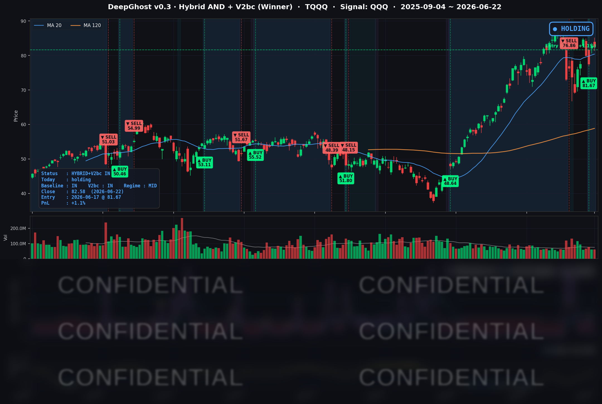

종전 기대감은 있으나, 다시 물가 불안, 즉 연준의 기준금리 인상에 대한 불안이 고개를 들었습니다. 주식은 많이 올랐고 차익실현에 대한 욕구와 더 오를거라는 기대가 싸우고 있습니다.
📊 오늘의 매매 신호
| 항목 | 내용 |
|---|---|
| 오늘 할 일 | ✅ 아무것도 안 해도 됩니다 |
| 포지션 상태 | 📈 TQQQ 보유 중 (IN POSITION) |
| 매수 진입일 | 2026-06-17 (5일째) |
| 진입가 → 현재가 | $81.67 → $82.58 |
| 현재 포지션 수익 | +1.1% |
TQQQ 시그널 — IN POSITION
현재 상태: 매수 포지션 유지 중 | 보유 수익률 +1.1%

오늘은 헤드라인만 보면 "기술주 급락"이었습니다. 알파벳(구글)이 1년래 최악급인 -4.99%, 넷플릭스 -5.82%, 아마존 -4.75%, 브로드컴 -4.67%로 대형 기술주가 무더기로 4~6% 빠졌으니까요. 그런데 나스닥100을 추종하는 QQQ는 -0.36%에 그쳤습니다. 나스닥 종합지수(-1.32%)의 4분의 1 수준입니다.
이 괴리가 오늘의 핵심입니다. 자금이 소형주·다우·메모리 반도체로 옮겨가는 자리 바꿈(로테이션) 장세였고, 테슬라(+1.14%) 같은 일부 대형주가 완충 역할을 했기 때문입니다. 덕분에 TQQQ도 -0.35%에 그쳐, 6월 17일 진입한 자리에서 보유 수익 +1.11%를 지켰습니다. 직전 거래일(6/18)의 +1.47%에서 소폭 줄었지만, 하루 등락 범위 안의 정상적인 움직임입니다.
신호 측면에서는 새로 매수하거나 매도할 일이 없었습니다. 6월 17일 진입 자리를 5거래일째 그대로 보유(HOLD)하는 중입니다.
⚠️ 차트 읽는 법은 별도 가이드('따라하기 post')에 정리되어 있습니다.
오늘 미국 시장 — 시황 요약
지수 마감
| 지수 | 종가 | 등락률 |
|---|---|---|
| S&P 500 | 7,472.79 | -0.37% |
| 나스닥 종합 | 26,166.60 | -1.32% |
| 다우존스 | 51,712.71 | +0.29% |
| 러셀 2000 | 3,004.40 | +0.83% |
표면적으로는 약보합이지만 속을 들여다보면 명확한 자리 바꿈 장세였습니다. 메가캡 기술주가 몰린 나스닥 종합은 크게 빠진 반면, 다우와 소형주 중심의 러셀 2000은 오히려 상승했습니다. 빅테크 안에서의 차익실현이 그만큼 극심했다는 의미입니다.
국채 금리 동향
| 만기 | 수익률 | 전일 대비 |
|---|---|---|
| 3개월 | 3.680% | +2.2bp |
| 5년 | 4.287% | +6.2bp |
| 10년 | 4.509% | +5.8bp |
| 30년 | 4.947% | +4.6bp |
금리가 다시 올랐습니다. 특히 10년물이 4.5%대로 재진입한 점이 중요합니다. 장단기 스프레드(10년-3개월 +82.9bp)는 정상적인 우상향 곡선을 유지하며 역전은 없었습니다. 금리가 전 구간에서 위로 밀려 올라간 모습으로, 미래 수익을 현재 가치로 따질 때 할인율에 민감한 고평가 성장주에는 직접적인 부담으로 작용했습니다. 채권 시장은 "올해 안에 금리 인하는 없다"는 시나리오에 무게를 싣고 있습니다.
연준 발언 & 금리 패스
워시 연준 의장은 6월 17일 FOMC 기자회견에서 2% 물가 목표에 대한 확고한 의지와 신중한 기조를 재확인했습니다. 점도표에서는 다수 위원이 2026년 동결 또는 최소 1회 인상을 시사했습니다. 시장은 이를 매파적으로 해석했고, 트레이더들은 올해 안에 금리 인하가 없을 확률을 약 80%로 보고 있습니다. 다음 분수령은 7월 28~29일 FOMC와 그 전에 발표될 물가 지표입니다.
오늘의 핵심 이슈
- 빅테크/AI 자리 바꿈 — 알파벳(-4.99%)이 핵심 AI 인재 이탈 보도와 막대한 AI 투자 부담 우려가 겹치며 1년래 최악급으로 하락했고, 매도세가 아마존·브로드컴·넷플릭스·마이크로소프트로 확산됐습니다.
- 메모리·파운드리 역주행 — 마이크론(+6.82%)은 AI용 고대역폭 메모리(HBM)의 2026년 물량 완판 기대로, 인텔(+5.19%)은 파운드리 협력 진척 보도로 급등하며 반도체 섹터를 떠받쳤습니다. 마이크론은 6월 24일(수) 장 마감 후 실적 발표가 예정돼 있어 단기 최대 변수입니다.
- 금리 재상승 + 매파 연준 — 10년물 4.5%대 재진입과 "연내 무인하" 기대가 고평가 성장주에 구조적 압박으로 작용했습니다.
변동성 & 투자심리
- VIX(공포지수): 17.28 (전일 대비 +5.37%) — 소폭 올랐지만 여전히 18 미만의 낮은 수준입니다. 빅테크 급락에도 시장 전체가 패닉이 아닌 차익실현성 조정이었음을 뒷받침합니다.
- 공포탐욕지수: 매파 연준과 빅테크 매도가 심리를 짓눌렀지만, 소형주·다우 강세가 완충하며 중립~약한 공포 톤을 보였습니다.
종합하면, 오늘은 위험 회피라기보다 메가캡 AI 그룹에 집중된 차익실현이었다는 해석이 우세합니다.
매크로 & 원자재
- WTI 유가: $74.13 (-3.23%) — 이란 관련 협상 진전과 호르무즈 해협 정상화 기대에 급락.
- 브렌트유: $78.08 (-2.22%)
- 금: $4,209.5 (-0.35%) — 위험 회피 완화와 실질금리 상승에 소폭 약세.
유가 하락은 물가 안정 측면에서는 긍정적이지만, 채권 시장은 오히려 금리를 올리며 연준의 매파 기조를 더 크게 반영했습니다.
주요 종목 동향
| 종목 | 종가 | 등락률 | 비고 |
|---|---|---|---|
| AAPL | $297.01 | -0.34% | 약보합, 상대적 방어 |
| NVDA | $208.65 | -0.97% | AI 반도체 약세 동조하나 선방 |
| MSFT | $367.34 | -3.18% | 소프트웨어·AI 투자 우려로 매도 동참 |
| GOOGL | $349.68 | -4.99% | 당일 최대 이슈, AI 인재 이탈+투자 부담 |
| META | $563.85 | -2.32% | 메가캡 매도 동참 |
| AMZN | $232.79 | -4.75% | AI 투자 그룹 동반 급락 |
| TSLA | $405.05 | +1.14% | 메가캡 중 드문 상승, 로테이션 수혜 |
| NFLX | $72.88 | -5.82% | 커버리지 내 최대 낙폭 |
| AVGO | $392.13 | -4.67% | AI 가속기 차익실현 |
| QCOM | $221.90 | -1.86% | 반도체 약세 동조 |
| INTC | $140.94 | +5.19% | 파운드리 협력 진척 보도로 급등 |
| MU | $1,211.38 | +6.82% | HBM 기대, 6/24 장후 실적 대기 |
반도체 안에서도 희비가 갈렸습니다. AI 가속기(브로드컴·엔비디아)는 차익실현으로 빠진 반면, 메모리(마이크론)와 파운드리(인텔)는 급등하며 정반대로 움직였습니다. 6월 24일 마이크론 실적이 반도체 섹터 전체의 방향타가 될 단기 빅 이벤트입니다.
Ghost.AI — Quantitative AI Investment
Model: DeepGhost v0.3 | Transformer-Based Deep Learning
Coverage: 13 tickers | Updated every trading day after US market close
⚠️ 본 자료는 정보 제공 목적으로만 작성되었으며 투자 권유가 아닙니다. 모든 투자의 책임은 투자자 본인에게 있습니다. 과거 성과가 미래 수익을 보장하지 않습니다.
[유의사항]
- 본 서비스는 불특정 다수를 대상으로 발행되는 단방향 정보 제공 서비스이며, 투자자 개인의 재산 상황·투자 목적·위험 선호도를 반영한 개별 투자 조언이 아닙니다.
- 고스트에이아이 주식회사는 고객과 쌍방향 의사소통(개별 상담, 맞춤형 자문 등)을 제공하지 않습니다.
- 본 콘텐츠는 투자 권유 또는 매매 주문의 청약·청약의 권유에 해당하지 않으며, 최종 투자 판단 및 그에 따른 손익의 책임은 전적으로 투자자 본인에게 있습니다.
고스트에이아이 주식회사